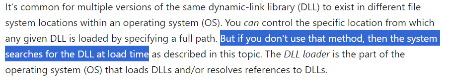
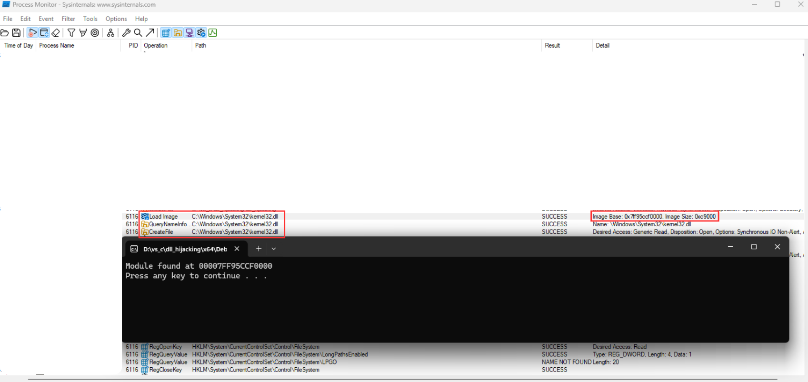
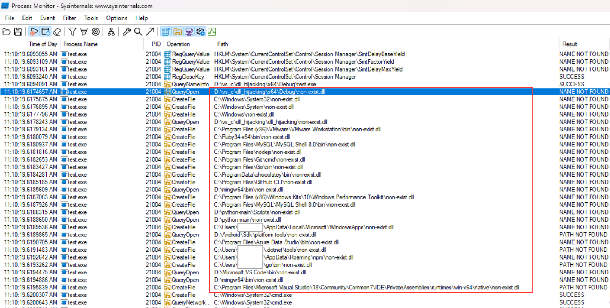
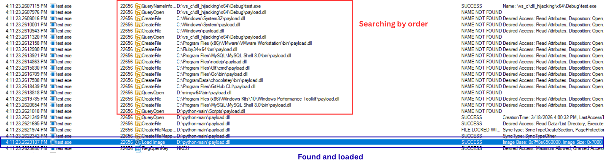
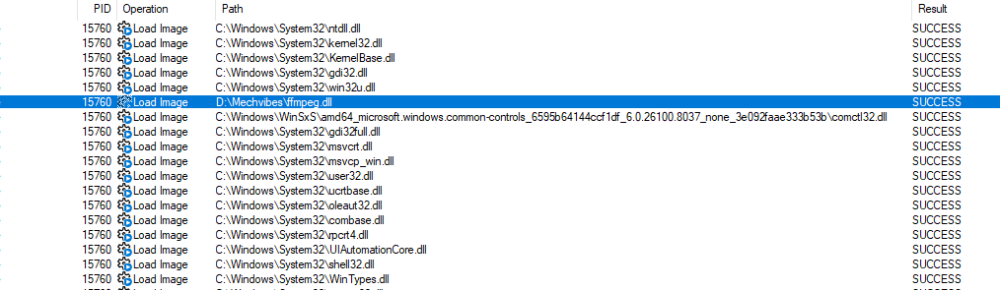
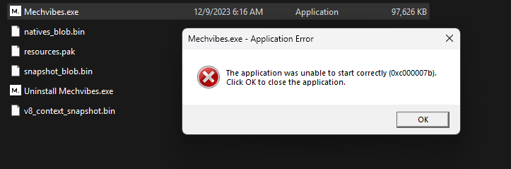
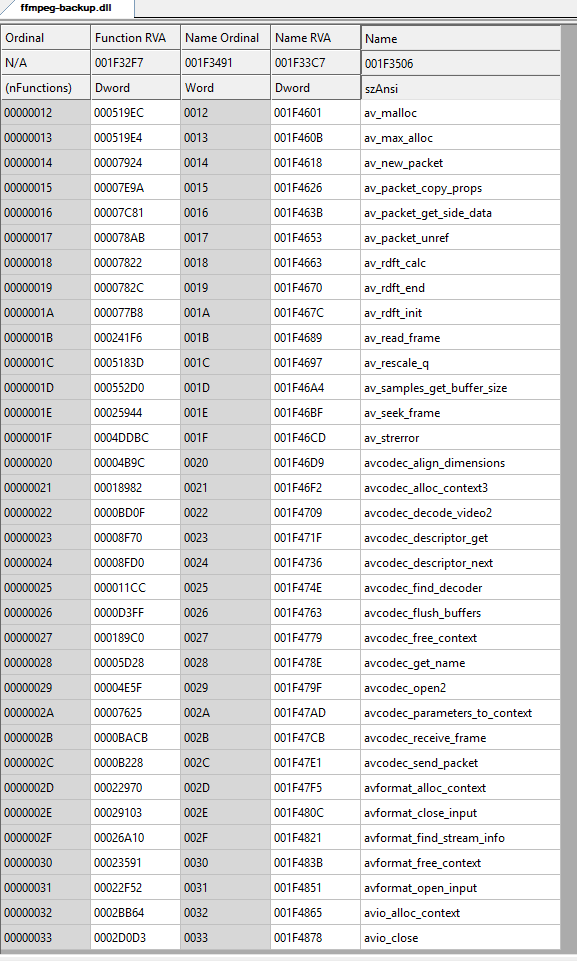
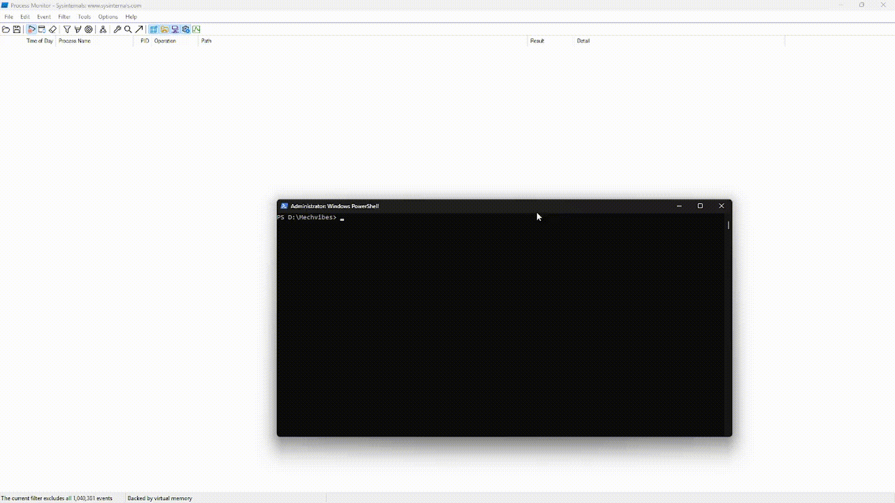
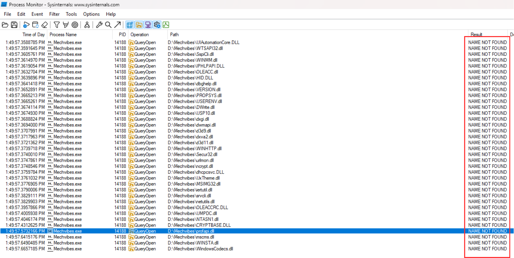
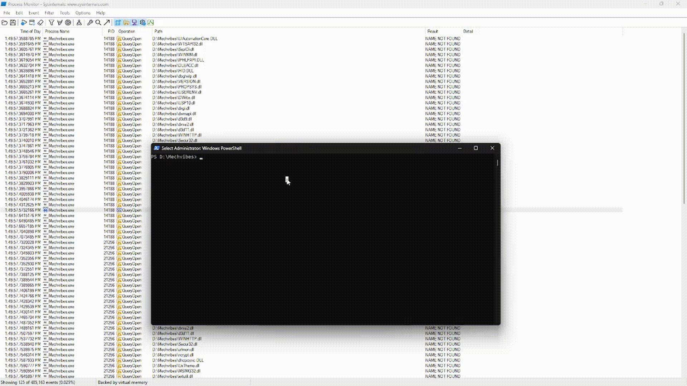

Overview: Continuing from the previous blog post about DLL injection, we have another technique to load DLLs into a process, exploiting Windows's search-order mechanism.
This sample was created on the x64 architecture.
As we know that DLL is a Dynamic-link library. And can be loaded it into the process by LoadLibrary(LPCSTR libName).
HMODULE kernel32_base = LoadLibraryA("kernel32.dll");From above code snippet, kernel32_base will hold the base address of the loaded module. So, how does Windows locate that DLL. This is mentioned in MSDN document as below:

The Windows searches for the DLLs at load time by order. Of course we will do some experiments. We try loading DLL. And use the Process Monitor to see what happened after we load a definitely existing DLL and non-existent DLL.
int main() { HMODULE handle_module = LoadLibraryA("kernel32.dll"); }Pay attention to the path that Windows accesses for the search.

Next we try loading a non-existent DLL to see what happend
int main() { HMODULE handle_module = LoadLibraryA("non-existent.dll"); }
From here we can see that the Windows search for the non-existent.dll from many different paths, begins with own's directory. By exploiting this mechanism, we can cause an application to inadvertently load a malicious DLL .
To verify that, we will put the malicious DLL - payload.dll, which we created from previous post, into D:\python-main then run the test.exe to see if Windows can find it.


The payload.dll successfully loaded into the test.exe process. Thiss is the DLL Hijacking.
So let's assume that attacker overwrites one of DLLs of a valid application. Will it execute the attacker's DLL?
In this test, we will check for Mechvibes.exe application, which emulates sound of keyboard in this PC, and check which DLLs it loads as order also.

Here is the list of DLLs it loads, most of DLLs loaded from Window/System32. And of course many other applications use these DLLs as well. To avoid breaking any functionality in Windows. We try rename and overwrites the first DLL loaded in to the process located at D disk, ffmpeg.dll
We move payload.dll to Mechvibes folder, make a copy of ffmpeg.dll to ffmpeg-backup.dll then we change the name of payload.dll to ffmpeg.dll, finally execute Mechvibes.exe. These steps and result are presented in the gif as following:


payload.dllwas successfully loaded into the process. However it breaks the functionality of the application. Because the application may use the original DLL to function normally but we overwrote it.
So we need to explore what functions are inside the original DLL

There are a lot of functions in this DLL. Our payload will play role as a bridge, assume that our payload loaded in process, every time the process calls to function, which does not exist in our payload. Then our payload uses linker to redirect to the origin DLL. To keep application functioning normally.
#define FORWARD_DLL "ffmpeg-backup"
#pragma comment(linker, "/export:av_buffer_create=" FORWARD_DLL ".av_buffer_create")
#pragma comment(linker, "/export:av_buffer_get_opaque=" FORWARD_DLL ".av_buffer_get_opaque")
//... same with the rest of functionsResult as following

payload.dll successfully loaded into the process without beaking any functionality. This called DLL Proxing
I also noticed that Mechvibes.exe also loads DLLs, which are not exist in its directory.
Take a look at the picture below

This means the application can still run normally without overwriting any DLL. Now try rename the payload.dll to one of these NAME NOT FOUND. It could be profapi.dll in this time.

The result shows that
payload.dll successfully
loaded under the guise of a non-existent module without breaking
any functionality of the application.
And will be
reactivated every time the user opens this application
.Payload.dll is persistently
loaded.
In summary, all DLL injection techniques discussed in this post require the DLL to exist on disk. In next post, we will try to make POC of DLL Injection technique called Reflective DLL Injection